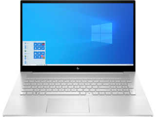
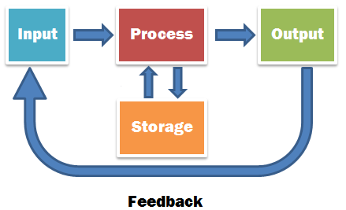

Computer architecture
Computer:-
it is basically any programmable, electronic device that accepts data, performs operations, presents the results, and can store the data or results.
.jpg)
As shown there is diffrent types of copmuter . it differ in shape,size,uses and work places.
it comes in two basic designs:-
- portable
- Laptop comuters: a portable Computer that has a keyboard,monitor and other devices integrated into a single compact case

- Tablet: a portable Computer integrated into a flat multitouch-sensitive screen.It uses an onscreen virtual keyboard.

- stationary
- Super computer:performs complex calculations extermly rapidly and designed to handle many programs running in the same time.
- mainfarme: supports many users simultaneously and designed to excute a few programs as quickly as possible
- Desktop computer:a large,expensive computer used in businesses that mange large amount of date

There is four essential things the computer should be able to do .

- Input
it is entering date into computer
Input devices
- Keyboard
- Mouse
- Microphone
- scanner
.png)
- Proccesing
It is performing operations on received date
- storing
It is saving date,programs or output